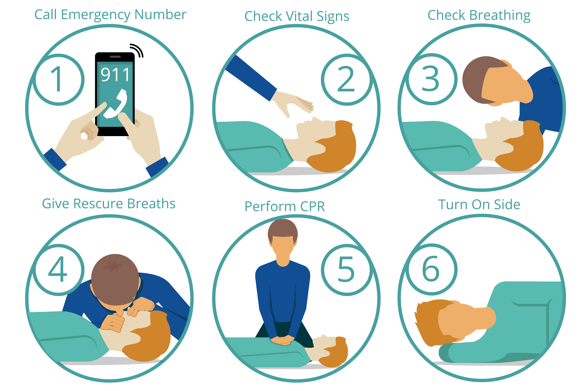

5. Reanimação Cardiopulmonar (RCP) Básica
Verifique se a pessoa está consciente e respirando. Se não estiver, inicie compressões torácicas no centro do peito, com uma frequência de 100 a 120 compressões por minuto. Após 30 compressões, realize duas ventilações boca a boca. Continue o ciclo até a chegada de ajuda profissional.
